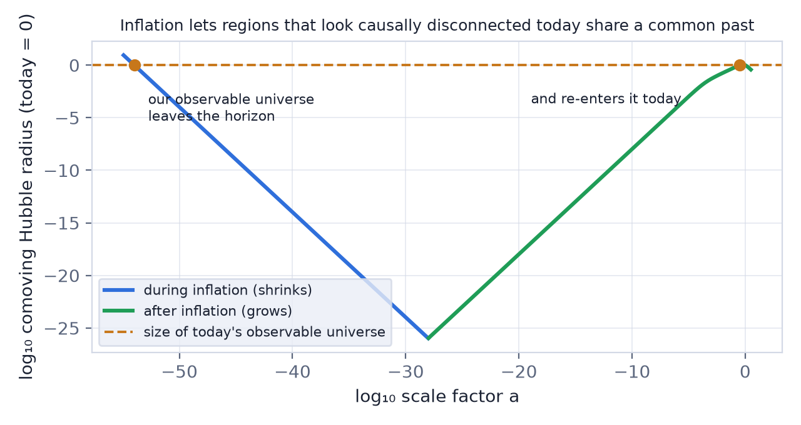
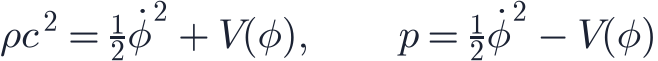
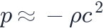
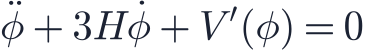
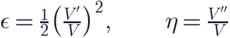
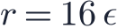
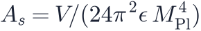
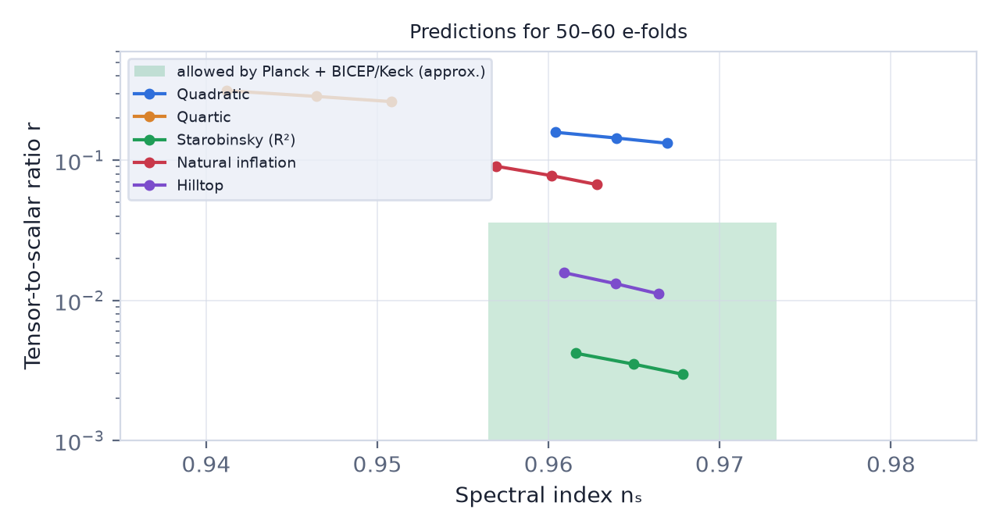

In this lesson you will learn
|
Three puzzles of the hot Big Bang
The standard Big Bang model explains the expansion, the light elements and the CMB beautifully. But it starts from very special initial conditions that it does not explain.
1. The horizon problem
When the CMB was released, the particle horizon covered only about two degrees on today's sky (lesson L2.6). Regions further apart had never exchanged a signal. Yet the CMB has the same temperature, 2.7255 K, in every direction to one part in 100 000. How could hundreds of causally disconnected patches agree so precisely?
2. The flatness problem
Deviations from flatness grow with time: in the matter era and in the radiation era (lesson L2.4). Today , so at the Planck time must have been smaller than about . Why was the universe tuned so precisely?
3. The monopole problem
Many grand unified theories predict heavy particles called magnetic monopoles, produced in
enormous numbers at energies near  GeV. They would dominate the universe today. None
has ever been found.
GeV. They would dominate the universe today. None
has ever been found.
The idea: accelerated expansion
Between 1980 and 1982 Alexei Starobinsky, Alan Guth, Andrei Linde, and Andreas Albrecht with Paul Steinhardt proposed that before the hot Big Bang, the universe went through a phase of rapid, accelerated expansion: inflation.
The key quantity is the comoving Hubble radius , the region, measured on the expanding grid, within which causal processes can act at a given time.
- In a decelerating universe, decreases, so the comoving Hubble radius grows. More and more of the universe comes into causal contact.
- In an accelerating universe, increases, so the comoving Hubble radius shrinks.

How inflation solves the problems
|
How much inflation is needed? The comoving Hubble radius must shrink by a factor of about
 , i.e. the universe must expand by about 60 e-folds:
, i.e. the universe must expand by about 60 e-folds:
(the exact number depends on the energy scale and on how the universe reheated).
Slow roll: a field on a hill
What could drive accelerated expansion? From lesson L6.2, we need a
substance with  . A scalar field
. A scalar field  , the inflaton,
does the job. Its energy density and pressure are
, the inflaton,
does the job. Its energy density and pressure are

If the field changes slowly, so that the potential energy  dominates the kinetic energy,
then
dominates the kinetic energy,
then

: almost a cosmological constant. The field obeys
like a ball rolling down a hill with friction from the expansion.
The shape of the hill is measured by the slow-roll parameters (in units of the reduced Planck mass):

Inflation lasts while and , i.e. while the potential is flat enough. It ends when reaches 1 and the field rolls quickly to the bottom.
Reheating At the bottom of the potential the field oscillates and decays into ordinary particles, filling the universe with hot radiation. This reheating is the start of the hot Big Bang described in Level 4. Inflation therefore does not replace the Big Bang; it sets its initial conditions. |
Try it: Inflation Slow-Roll Simulator Choose a potential and press Play. Watch the field roll, ε grow to 1 and inflation end. |
Quantum seeds of structure
The most remarkable prediction of inflation is quantitative. Quantum fluctuations of the inflaton are stretched from microscopic to cosmic scales and freeze in when they leave the Hubble radius. They become the density fluctuations that grow into galaxies (Level 5).
Slow-roll inflation predicts:
- Gaussian, adiabatic fluctuations (all components perturbed together), confirmed by Planck;
- a nearly scale-invariant spectrum with spectral index
slightly below 1, because the field rolls and  changes slowly;
- primordial gravitational waves with tensor-to-scalar ratio
changes slowly;
- primordial gravitational waves with tensor-to-scalar ratio

- an amplitude set by the energy scale,

.
A test of inflation Planck measures : significantly below 1, as slow-roll inflation
predicted decades earlier. Primordial gravitational waves have not yet been detected; the
BICEP/Keck and Planck data require |

The data already exclude the simplest models:
- predicts (fine) but (too large);
- is excluded on both counts;
- plateau models such as Starobinsky's inflation or Higgs inflation predict and , in excellent agreement.
The energy scale of inflation The tensor amplitude fixes the energy scale directly:
.
The current limit therefore says inflation happened below about |
Searching for primordial gravitational waves
Gravitational waves from inflation would leave a unique swirling pattern in the polarisation of the CMB, called B-modes. Experiments such as BICEP/Keck, the Simons Observatory, SPT-3G and the planned LiteBIRD satellite aim to reach , enough to test Starobinsky-like models.
Is inflation proven? Inflation is the leading explanation of the initial conditions, and its predictions for
|
Remember this
|